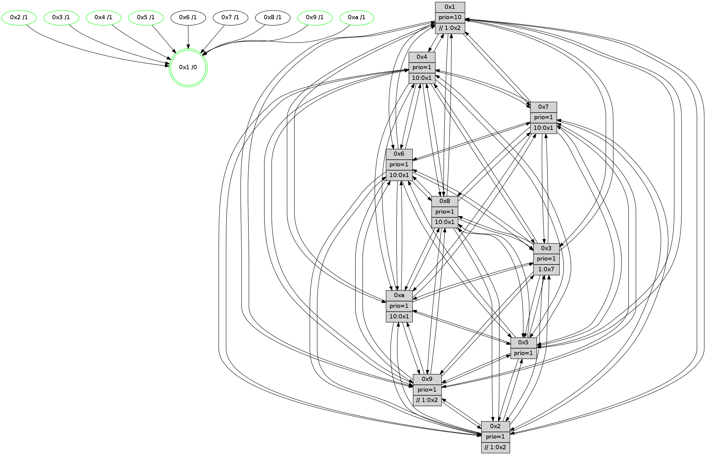

>> << IDX [start] -100 -25 -5 +0 +5 +25 +100 [900.474161148]
 Previous packets
895.007229 beacon06(faad) #0 coord=01,02,03,04,05,06,07,0a,09,08 cycle=688.0ms assoc 64 fe 7a
895.017227 beacon07(faad) #0 coord=01,02,03,04,05,06,07,0a,09,08 cycle=688.0ms assoc 64 84 37
895.027232 beacon0a(faad) #0 coord=01,02,03,04,05,06,07,0a,09,08 cycle=688.0ms assoc 64 f5 3c
895.037233 beacon09(faad) #0 coord=01,02,03,04,05,06,07,0a,09,08 cycle=688.0ms assoc 64 7b eb
895.047235 beacon08(faad) #0 coord=01,02,03,04,05,06,07,0a,09,08 cycle=688.0ms assoc 64 01 a6
895.059106 [Hello(4): seq=572 sym=5,7,6,2,3,9,8,10,1 sysInfo= stat=5:8,6,7,10/7:1,6,9,5/6:5,0,6,9/2:9,3,2,8/3:14,5,4,7/9:12,7,11,5/8:10,2,8,10/10:0,15,13,8/1:14,0,8,1]
895.062794 [Hello(7): seq=572 sym=2,3,5,6,4,9,8,10,1 sysInfo=hasWarning stat=2:0,7,3,11/3:14,0,11,11/5:4,7,14,14/6:14,11,11,5/4:9,12,9,0/9:3,3,2,0/8:7,12,2,0/10:3,6,1,1/1:1,14,5,0]
895.065498 [Hello(10): seq=505 sym=6,2,3,9,5,7,4,1 asym=8 sysInfo=hasWarning stat=6:3,6,7,3/2:10,7,5,3/3:2,9,2,7/9:6,2,8,1/5:8,9,10,11/7:12,4,7,5/4:4,11,15,6/1:4,8,9,1/8:0,1,0,0]
895.068628 [Color(7) seq=178 @0:0 prio=1 >10.@1,1.@2,1.@3,1.@4]
895.070252 [Hello(9): seq=516 sym=2,5,3,4,7,6,8,10,1 sysInfo=hasWarning stat=2:4,14,7,1/5:4,14,3,2/3:2,15,4,11/4:12,11,2,6/7:11,3,10,8/6:2,4,10,7/8:8,5,11,1/10:4,3,1,0/1:13,5,8,1]
895.073288 [Color(3) seq=213 @0:0 prio=1 >1.@7]
895.074691 [Color(9) seq=221 @0:0 prio=1 >>1.@2,1.@3,1.@4]
895.076487 [Color(1) seq=253 @0:0 prio=10 >>1.@2,1.@3,1.@4]
895.080155 [Color(10) seq=193 @0:0 prio=1 >10.@1,1.@2,1.@3,1.@5]
895.083554 [Hello(8): seq=516 sym=5,2,3,4,9,6,7,1 sysInfo=hasWarning stat=5:6,13,12,11/2:5,7,7,3/3:7,4,7,11/4:12,8,6,6/9:2,2,2,0/6:8,4,4,9/7:1,2,0,0/1:9,10,3,0]
895.087546 [Color(8) seq=228 @0:0 prio=1 >10.@1,1.@2,1.@3,1.@5]
----------------------------------------------------------------------
895.745376 beacon01(faad) #0 coord=01,02,03,04,05,06,07,0a,09,08 cycle=688.0ms assoc
-- color-indic=1 64 50 78
895.755358 beacon02(faad) #0 coord=01,02,03,04,05,06,07,0a,09,08 cycle=688.0ms assoc 64 c3 49
895.765358 beacon03(faad) #0 coord=01,02,03,04,05,06,07,0a,09,08 cycle=688.0ms assoc 64 b9 04
895.775360 beacon04(faad) #0 coord=01,02,03,04,05,06,07,0a,09,08 cycle=688.0ms assoc 64 ce ee
895.785359 beacon05(faad) #0 coord=01,02,03,04,05,06,07,0a,09,08 cycle=688.0ms assoc 64 b4 a3
895.795358 beacon06(faad) #0 coord=01,02,03,04,05,06,07,0a,09,08 cycle=688.0ms assoc 64 3a 74
895.805359 beacon07(faad) #0 coord=01,02,03,04,05,06,07,0a,09,08 cycle=688.0ms assoc 64 40 39
895.815364 beacon0a(faad) #0 coord=01,02,03,04,05,06,07,0a,09,08 cycle=688.0ms assoc 64 31 32
895.835366 beacon08(faad) #0 coord=01,02,03,04,05,06,07,0a,09,08 cycle=688.0ms assoc 64 c5 a8
895.846915 [Hello(3): seq=573 sym=1,7,6,2,4,8,9,10,5 sysInfo= stat=1:5,0,12,0/7:3,10,3,6/6:15,2,5,1/2:12,15,6,9/4:8,1,11,5/8:12,1,3,0/9:3,13,5,9/10:4,14,2,1/5:4,11,1,10]
895.850149 [Color(4) seq=191 @0:0 prio=1 >10.@1,1.@2,1.@3,1.@7]
895.855971 [Color(2) seq=218 @0:0 prio=1 >>1.@2,1.@3,1.@4]
895.860618 [Hello(5): seq=573 sym=7,6,4,3,1,9,8,10,2 sysInfo=hasWarning stat=7:8,2,11,7/6:1,9,7,9/4:3,8,9,5/3:4,13,2,9/1:7,14,7,1/9:14,14,6,2/8:2,11,3,7/10:0,2,1,3/2:4,9,2,0]
895.863224 [STC(1) #0.112 tree-change,inconsistent-stability,stable,to-color d=0]
895.865370 [Color(5) seq=226 @0:0 prio=1]
----------------------------------------------------------------------
896.533508 beacon01(faad) #0 coord=01,02,03,04,05,06,07,0a,09,08 cycle=688.0ms assoc
-- color-indic=1 64 ec 7d
896.543491 beacon02(faad) #0 coord=01,02,03,04,05,06,07,0a,09,08 cycle=688.0ms assoc 64 7f 4c
896.553491 beacon03(faad) #0 coord=01,02,03,04,05,06,07,0a,09,08 cycle=688.0ms assoc 64 05 01
896.563491 beacon04(faad) #0 coord=01,02,03,04,05,06,07,0a,09,08 cycle=688.0ms assoc 64 72 eb
896.573492 beacon05(faad) #0 coord=01,02,03,04,05,06,07,0a,09,08 cycle=688.0ms assoc 64 08 a6
896.583491 beacon06(faad) #0 coord=01,02,03,04,05,06,07,0a,09,08 cycle=688.0ms assoc 64 86 71
896.593492 beacon07(faad) #0 coord=01,02,03,04,05,06,07,0a,09,08 cycle=688.0ms assoc 64 fc 3c
896.603496 beacon0a(faad) #0 coord=01,02,03,04,05,06,07,0a,09,08 cycle=688.0ms assoc 64 8d 37
896.613496 beacon09(faad) #0 coord=01,02,03,04,05,06,07,0a,09,08 cycle=688.0ms assoc 64 03 e0
896.623496 beacon08(faad) #0 coord=01,02,03,04,05,06,07,0a,09,08 cycle=688.0ms assoc 64 79 ad
896.634724 [STC(6)->1 #0.112 tree-change,inconsistent-stability,to-color d=1]
896.636069 [STC(2)->1 #0.112 tree-change,inconsistent-stability,stable,to-color d=1]
896.637584 [Hello(7): seq=573 sym=2,3,5,6,4,9,8,10,1 sysInfo=hasWarning stat=2:0,8,3,11/3:15,1,11,11/5:5,8,14,14/6:15,11,11,5/4:10,13,9,0/9:4,4,2,0/8:8,13,2,0/10:3,7,1,1/1:1,15,6,0]
896.643688 [Color(1) seq=254 @0:0 prio=10 >>1.@2,1.@3,1.@4]
896.645331 [STC(7)->1 #0.112 to-color d=1]
896.648304 [STC(4)->1 #0.112 tree-change,inconsistent-stability,stable,to-color d=1]
896.651075 [STC(8)->1 #0.112 to-color d=1]
896.653981 [Color(3) seq=214 @0:0 prio=1 >1.@7]
896.656071 [Hello(10): seq=506 sym=6,2,3,9,5,7,4,1 asym=8 sysInfo=hasWarning stat=6:4,6,7,3/2:10,8,5,3/3:3,9,2,7/9:6,2,8,1/5:9,10,10,11/7:12,4,7,5/4:5,12,15,6/1:4,8,10,1/8:1,2,0,0]
896.660571 [STC(10)->1 #0.112 tree-change,inconsistent-stability,stable,to-color d=1]
896.661825 [Hello(9): seq=517 sym=2,5,3,4,7,6,8,10,1 sysInfo=hasWarning stat=2:5,15,7,1/5:5,15,3,2/3:3,15,4,11/4:13,12,2,6/7:11,3,10,8/6:2,4,10,7/8:9,6,11,1/10:4,4,1,0/1:13,6,9,1]
896.664645 [STC(9)->1 #0.112 tree-change,inconsistent-stability,stable,to-color d=1]
896.666142 [Color(10) seq=194 @0:0 prio=1 >10.@1,1.@2,1.@3,1.@5]
896.668530 [Color(9) seq=222 @0:0 prio=1 >>1.@2,1.@3,1.@4]
----------------------------------------------------------------------
897.321641 beacon01(faad) #0 coord=01,02,03,04,05,06,07,0a,09,08 cycle=688.0ms assoc
-- color-indic=1 64 d8 65
897.331624 beacon02(faad) #0 coord=01,02,03,04,05,06,07,0a,09,08 cycle=688.0ms assoc 64 4b 54
897.341624 beacon03(faad) #0 coord=01,02,03,04,05,06,07,0a,09,08 cycle=688.0ms assoc 64 31 19
897.351624 beacon04(faad) #0 coord=01,02,03,04,05,06,07,0a,09,08 cycle=688.0ms assoc 64 46 f3
897.361624 beacon05(faad) #0 coord=01,02,03,04,05,06,07,0a,09,08 cycle=688.0ms assoc 64 3c be
897.371624 beacon06(faad) #0 coord=01,02,03,04,05,06,07,0a,09,08 cycle=688.0ms assoc 64 b2 69
897.381623 beacon07(faad) #0 coord=01,02,03,04,05,06,07,0a,09,08 cycle=688.0ms assoc 64 c8 24
897.391631 beacon0a(faad) #0 coord=01,02,03,04,05,06,07,0a,09,08 cycle=688.0ms assoc 64 b9 2f
897.411629 beacon08(faad) #0 coord=01,02,03,04,05,06,07,0a,09,08 cycle=688.0ms assoc 64 4d b5
897.422877 [Hello(1): seq=483 sym=4,2,9,5,10,3,8,6,7 sysInfo=coloring-mode-on,ColoringModeRequestCalled stat=4:2,10,11,0/2:6,4,7,10/9:11,2,8,3/5:1,3,14,4/10:11,2,5,1/3:11,4,4,2/8:15,3,4,0/6:9,8,3,9/7:7,9,9,11]
897.425556 [Hello(3): seq=574 sym=1,7,6,2,4,8,9,10,5 sysInfo= stat=1:5,0,13,0/7:4,10,3,6/6:15,2,6,1/2:12,0,7,9/4:8,2,11,5/8:12,1,3,0/9:4,14,6,9/10:5,15,3,1/5:5,12,1,10]
897.428287 [Hello(2): seq=570 sym=4,5,7,6,3,9,8,10,1 sysInfo=hasWarning stat=4:13,8,1,4/5:0,1,0,0/7:11,2,12,8/6:1,14,6,7/3:4,7,4,5/9:0,11,5,2/8:2,15,2,7/10:15,6,5,8/1:4,13,6,1]
897.431752 [Color(2) seq=219 @0:0 prio=1 >>1.@2,1.@3,1.@4]
897.438731 [Hello(6): seq=574 sym=2,3,5,4,7,9,8,10,1 sysInfo= stat=2:8,3,2,7/3:4,4,10,9/5:3,1,9,12/4:4,12,2,0/7:1,1,6,4/9:2,12,9,2/8:13,3,3,0/10:1,2,15,9/1:9,1,3,1]
897.442620 [Hello(5): seq=574 sym=7,6,4,3,1,9,8,10,2 sysInfo=hasWarning stat=7:9,2,12,7/6:1,9,8,9/4:4,8,10,5/3:5,14,2,9/1:7,15,7,1/9:15,15,7,2/8:2,11,4,7/10:1,3,2,3/2:4,9,3,0]
897.446079 [Color(5) seq=227 @0:0 prio=1]
897.447564 [Color(4) seq=192 @0:0 prio=1 >10.@1,1.@2,1.@3,1.@7]
----------------------------------------------------------------------
898.109771 beacon01(faad) #0 coord=01,02,03,04,05,06,07,0a,09,08 cycle=688.0ms assoc
-- color-indic=1 64 64 60
898.119755 beacon02(faad) #0 coord=01,02,03,04,05,06,07,0a,09,08 cycle=688.0ms assoc 64 f7 51
898.129753 beacon03(faad) #0 coord=01,02,03,04,05,06,07,0a,09,08 cycle=688.0ms assoc 64 8d 1c
898.139753 beacon04(faad) #0 coord=01,02,03,04,05,06,07,0a,09,08 cycle=688.0ms assoc 64 fa f6
898.149755 beacon05(faad) #0 coord=01,02,03,04,05,06,07,0a,09,08 cycle=688.0ms assoc 64 80 bb
898.159755 beacon06(faad) #0 coord=01,02,03,04,05,06,07,0a,09,08 cycle=688.0ms assoc 64 0e 6c
898.169756 beacon07(faad) #0 coord=01,02,03,04,05,06,07,0a,09,08 cycle=688.0ms assoc 64 74 21
898.179760 beacon0a(faad) #0 coord=01,02,03,04,05,06,07,0a,09,08 cycle=688.0ms assoc 64 05 2a
898.199760 beacon08(faad) #0 coord=01,02,03,04,05,06,07,0a,09,08 cycle=688.0ms assoc 64 f1 b0
898.211268 [Hello(8): seq=518 sym=5,2,3,4,9,6,7,10,1 sysInfo=hasWarning stat=5:8,15,12,11/2:6,9,7,3/3:8,5,7,11/4:13,10,6,6/9:3,3,3,0/6:9,4,4,9/7:1,2,0,0/10:0,1,1,0/1:11,10,4,0]
898.214313 [Color(1) seq=255 @0:0 prio=10 >>1.@2,1.@3,1.@4]
898.216236 [Hello(4): seq=574 sym=5,7,6,2,3,9,8,10,1 sysInfo= stat=5:9,7,7,10/7:2,7,9,5/6:5,0,6,9/2:10,4,2,8/3:0,7,4,7/9:14,9,12,5/8:11,3,9,10/10:2,1,14,8/1:15,1,9,1]
898.218761 [Hello(9): seq=518 sym=2,5,3,4,7,6,8,10,1 sysInfo=hasWarning stat=2:6,0,8,1/5:6,0,3,2/3:4,15,4,11/4:13,13,2,6/7:12,3,10,8/6:3,4,11,7/8:9,6,11,1/10:4,4,1,0/1:14,6,9,1]
898.221882 [Hello(7): seq=574 sym=2,3,5,6,4,9,8,10,1 sysInfo=hasWarning stat=2:1,9,3,11/3:0,2,11,11/5:6,9,14,14/6:0,11,11,5/4:10,14,10,0/9:5,5,3,0/8:8,13,3,0/10:4,8,2,1/1:2,15,6,0]
898.225072 [Hello(10): seq=507 sym=6,2,3,9,5,7,4,1 asym=8 sysInfo=hasWarning stat=6:5,6,8,3/2:11,9,6,3/3:4,9,2,7/9:7,3,8,1/5:10,11,10,11/7:13,4,7,5/4:5,13,15,6/1:5,8,10,1/8:1,2,0,0]
898.230183 [Color(10) seq=195 @0:0 prio=1 >10.@1,1.@2,1.@3,1.@5]
898.233841 [Color(9) seq=223 @0:0 prio=1 >>1.@2,1.@3,1.@4]
898.244037 [Color(3) seq=215 @0:0 prio=1 >1.@7]
----------------------------------------------------------------------
898.897901 beacon01(faad) #0 coord=01,02,03,04,05,06,07,0a,09,08 cycle=688.0ms assoc
-- color-indic=1 64 a0 6e
898.907884 beacon02(faad) #0 coord=01,02,03,04,05,06,07,0a,09,08 cycle=688.0ms assoc 64 33 5f
898.917884 beacon03(faad) #0 coord=01,02,03,04,05,06,07,0a,09,08 cycle=688.0ms assoc 64 49 12
898.927884 beacon04(faad) #0 coord=01,02,03,04,05,06,07,0a,09,08 cycle=688.0ms assoc 64 3e f8
898.937884 beacon05(faad) #0 coord=01,02,03,04,05,06,07,0a,09,08 cycle=688.0ms assoc 64 44 b5
898.947884 beacon06(faad) #0 coord=01,02,03,04,05,06,07,0a,09,08 cycle=688.0ms assoc 64 ca 62
898.957885 beacon07(faad) #0 coord=01,02,03,04,05,06,07,0a,09,08 cycle=688.0ms assoc 64 b0 2f
898.967888 beacon0a(faad) #0 coord=01,02,03,04,05,06,07,0a,09,08 cycle=688.0ms assoc 64 c1 24
898.977888 beacon09(faad) #0 coord=01,02,03,04,05,06,07,0a,09,08 cycle=688.0ms assoc 64 4f f3
898.987889 beacon08(faad) #0 coord=01,02,03,04,05,06,07,0a,09,08 cycle=688.0ms assoc 64 35 be
898.999115 [Hello(3): seq=575 sym=1,7,6,2,4,8,9,10,5 sysInfo= stat=1:5,0,13,0/7:4,10,3,6/6:0,2,6,1/2:13,1,7,9/4:8,3,11,5/8:13,1,3,0/9:4,14,6,9/10:5,15,3,1/5:6,13,1,10]
899.003487 [Hello(6): seq=575 sym=2,3,5,4,7,9,8,10,1 sysInfo= stat=2:8,3,2,7/3:4,5,10,9/5:4,2,9,12/4:5,13,2,0/7:2,1,6,4/9:3,13,9,2/8:14,3,3,0/10:2,3,15,9/1:9,2,3,1]
899.006389 [Hello(2): seq=571 sym=4,5,7,6,3,9,8,10,1 sysInfo=hasWarning stat=4:14,9,1,4/5:1,2,0,0/7:12,2,12,8/6:2,14,6,7/3:5,8,4,5/9:1,12,5,2/8:3,15,2,7/10:0,7,5,8/1:5,14,6,1]
899.009135 [Hello(5): seq=575 sym=7,6,4,3,1,9,8,10,2 sysInfo=hasWarning stat=7:10,2,12,7/6:1,9,8,9/4:5,9,10,5/3:6,15,2,9/1:8,0,7,1/9:0,0,7,2/8:3,11,4,7/10:2,4,2,3/2:4,9,3,0]
899.011881 [Color(4) seq=193 @0:0 prio=1 >10.@1,1.@2,1.@3,1.@7]
899.014316 [Color(5) seq=228 @0:0 prio=1]
899.017464 [Color(2) seq=220 @0:0 prio=1 >>1.@2,1.@3,1.@4]
899.020456 [Hello(1): seq=484 sym=4,2,9,5,10,3,8,6,7 sysInfo=coloring-mode-on,ColoringModeRequestCalled stat=4:3,11,11,0/2:7,5,7,10/9:12,3,8,3/5:2,4,14,4/10:12,3,5,1/3:12,5,4,2/8:0,3,4,0/6:10,8,3,9/7:8,9,9,11]
----------------------------------------------------------------------
899.686031 beacon01(faad) #0 coord=01,02,03,04,05,06,07,0a,09,08 cycle=688.0ms assoc
-- color-indic=1 64 1c 6b
899.696013 beacon02(faad) #0 coord=01,02,03,04,05,06,07,0a,09,08 cycle=688.0ms assoc 64 8f 5a
899.706015 beacon03(faad) #0 coord=01,02,03,04,05,06,07,0a,09,08 cycle=688.0ms assoc 64 f5 17
899.716014 beacon04(faad) #0 coord=01,02,03,04,05,06,07,0a,09,08 cycle=688.0ms assoc 64 82 fd
899.726015 beacon05(faad) #0 coord=01,02,03,04,05,06,07,0a,09,08 cycle=688.0ms assoc 64 f8 b0
899.736016 beacon06(faad) #0 coord=01,02,03,04,05,06,07,0a,09,08 cycle=688.0ms assoc 64 76 67
899.746015 beacon07(faad) #0 coord=01,02,03,04,05,06,07,0a,09,08 cycle=688.0ms assoc 64 0c 2a
899.756020 beacon0a(faad) #0 coord=01,02,03,04,05,06,07,0a,09,08 cycle=688.0ms assoc 64 7d 21
899.776019 beacon08(faad) #0 coord=01,02,03,04,05,06,07,0a,09,08 cycle=688.0ms assoc 64 89 bb
899.787186 [Hello(7): seq=575 sym=2,3,5,6,4,9,8,10,1 sysInfo=hasWarning stat=2:2,10,3,11/3:1,3,11,11/5:7,10,14,14/6:1,11,11,5/4:10,15,10,0/9:5,6,3,0/8:8,13,3,0/10:5,9,2,1/1:3,15,6,0]
899.790210 [Hello(8): seq=519 sym=5,2,3,4,9,6,7,10,1 sysInfo=hasWarning stat=5:9,0,12,11/2:7,10,7,3/3:9,6,7,11/4:14,11,6,6/9:4,4,3,0/6:10,4,4,9/7:2,2,0,0/10:1,2,1,0/1:12,11,4,0]
899.793258 [Hello(10): seq=508 sym=6,2,3,8,9,5,7,4,1 sysInfo=hasWarning stat=6:6,6,8,3/2:12,10,6,3/3:5,10,2,7/8:2,2,0,0/9:7,4,8,1/5:11,12,10,11/7:13,4,7,5/4:5,14,15,6/1:6,8,10,1]
899.795875 [Color(3) seq=216 @0:0 prio=1 >1.@7]
899.797219 [Hello(9): seq=519 sym=2,5,3,4,7,6,8,10,1 sysInfo=hasWarning stat=2:7,1,8,1/5:7,1,3,2/3:5,0,4,11/4:13,14,2,6/7:12,3,10,8/6:4,4,11,7/8:10,6,11,1/10:4,4,1,0/1:15,7,9,1]
899.800685 [STC(1) #0.113 tree-change,inconsistent-stability,stable,to-color d=0]
899.802285 [Color(10) seq=196 @0:0 prio=1 >10.@1,1.@2,1.@3,1.@5]
899.804020 [Color(9) seq=224 @0:0 prio=1 >>1.@2,1.@3,1.@4]
899.805663 [Color(1) seq=256 @0:0 prio=10 >>1.@2,1.@3,1.@4]
899.814690 [Hello(4): seq=575 sym=5,7,6,2,3,9,8,10,1 sysInfo= stat=5:9,8,7,10/7:3,7,9,5/6:5,0,6,9/2:10,5,2,8/3:1,8,4,7/9:15,10,12,5/8:11,3,9,10/10:3,2,14,8/1:0,1,9,1]